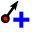
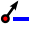

The vector field renderer is used to display vector field data such as earth deformation, tidal flows, and the like. It displays the vectors as arrows that are scaled and oriented according selected attributes of data points. It can only be used to render point data - line and polygon layers are not drawn by this symbology.
The vector field is defined by attributes in the data, which can represent the field either by cartesian components (x and y components of the field), or polar coordinates. If polar coordinates are used, the angle may be measured either eastwards from north, or northwards from east, and may be either in degrees or radians. The magnitude of field can be scaled up or down to an appropriate size for viewing the field.
As a special case the renderer can also display "height only" data, which displays a vertical arrow scaled using an attribute of the data. This is appropriate for displaying the vertical component of deformation, for example.
The renderer also has options for displaying an error ellipse associated with the vector. The error ellipse is displayed centred on the end of the arrow. It is defined by attributes of the data which can be one of
Whichever form of error ellipse is used, it can be scaled by a constant value, for example multiplying by 2.45 to convert variances to a 95% confidence limit.
The renderer can be used to display just the error ellipse by selecting an vector field type of "No Arrow".
The renderer also displays a scale box on the map showing how the arrow size relates to the corresponding vector length.
Note that the renderer does not take account of on-the-fly projection of the map - the arrows are drawn assuming that north is towards the top of the map.
A vector field is displayed by changing its symbology. Right click on the layer in the layers list, and select the symbology tab. In the renderer drop down select "Vector field". This will display the options for configuring the symbology. (Note: to see the renderer in the drop down the "new symbology" must be selected.)
The dialog has two main sections - the top section defines how the vector field is expressed in the data, and the bottom section defines characteristics of the arrow symbology. The dialog also has a tab for configuring the error ellipse.
The fields in the dialog are:
| Vector field type | Selects the field type - cartesian, polar, or height only, as described above. | ||||||||
| ... attribute | Selects the data attributes which define the vector field, either X/Y for cartesian fields, length/angle for polar fields, or height for the height only field | ||||||||
| Angle orientation/units | Defines how the angle is defined in the data. The orientation is one of North from East (North is 0°, East is 90°) or East from North (East is 0°, North is 90°). The units are either degrees or radians. | ||||||||
| Arrow size | Defines the size of the components of the arrow. The arrow has three components - the arrow head, the shaft, and the base. The head may change size according to the length of the vector - the shaft width and base size are fixed. The sizes are:
|
||||||||
| Arrow colour | Defines the colour of the arrow shaft and head, whether the head of the arrow is filled, and the colour used to fill the head of the arrow. | ||||||||
| Arrow shape | Defines the shape of the arrow. The arrow is defined by three relative x values - these measured relative to the endpoint of the vector and in the direction of the vector. They are scaled by the size of the arrow head to define the coordinates with which the arrow is plotted. The three values are illustrated here. They are based on the end of the vector ("base"). The values define the coordinates of the middle of the arrow head border. As a special case, if the front measurement is 0 (ie the tip of the arrow should be on the end of the vector) then the coordinates are adjusted to bring the actual tip of the arrow onto that point, rather than the middle of the arrow border. Also if the centre measurement is the same as the front measurement, then the arrow head is a simple line, rather than a polygon. | ||||||||
| Symbol units | Selects either millimetres, or map units. Defines the units define the arrow sizes. If millimetres are selected, then the arrow sizes are defined in millimetres on the plotted map, and will not change as the map scale changes. If map units, then the arrow will scale up and down as the map scale changes. | ||||||||
| Base size | The size of the base symbol (the symbol at the base of the arrow or the centre of the ellipse) | ||||||||
| Base border | The border of the base symbol | ||||||||
| Base fill | The colour of fill for the base symbol/td> | ||||||||
| Scale/units | Defines how the vector field will be scaled when it is represented on the map. This can be either in map units, or in the units in which the symbol format is defined (see below). Note that if the arrow is defined in map units, then these are the same. The length of each vector will be multiplied by this scale for representing on the map. | ||||||||
| Scale group | Defines a scale group label for the layer. Layers rendered with the same scale group will be forced to use the same scale. This must be a simple name, for example "displacement". The name can optionally followed by "*" and a mupltiple, which scale the arrow at the specified multiple of the group scale (for example "displacement*2"). | ||||||||
| Legend text | Defines text that will displayed alongside the symbology on the legend | ||||||||
| Scale box text/Show | The scale box text is displayed alongside the scale arrow in the scale box. If the show box is not ticked then the layer will not be included in the scale box. |
An error ellipse can be displayed for the vector by configuring using the Error ellipse tab of the symbology properties.
In the same way as the vector field tab this has two main sections - the top section defines how the error ellipse is expressed in the data, and the bottom section defines characteristics of the ellipse symbology
The fields in the dialog are:
| Error ellipse type | Selects the ellipse type - covariance, axes, circular, height as described above, or none. |
| Attribute fields | Depending on the ellipse type up to three attributes must be selected to define the ellipse size and shape. |
| Ellipse scale factor | This is a number by which the ellipse size defined by the attributes is multiplied. Note that the plot scale and scale group defined at the bottom of the dialog still apply to the error ellipse. |
| Ellipse axis orientation/units | Defines how the orientation of the error ellipse axes are defined in the data (for ellipses defined in terms of axes). The orientation is one of North from East (North is 0°, East is 90°) or East from North (East is 0°, North is 90°). The units are either degrees or radians. |
| Border width | Defines the plotted width of the ellipse border in terms of the symbol units. |
| Tick size | When plotting height "ellipses" or ellipses in which the semi-minor axis is zero the ellipse is instead plotted as a line with a tick at each end. This setting defines the size of the tick. |
| Draw ellipse/axes | Defines whether the ellipse is drawn, and whether the ellipse axes are drawn. If neither are ticked, there will be no error ellipse! |
| Border/axes colour | Defines the colour of the border an tick marks |
| Fill colour | Defines the colour used to fill the ellipse. The checkbox is used to choose whether the ellipse should be filled. |
The settings for scale, base symbol, and legend and scale box text are common with the settings for the vector field.
The renderer installs a toolbar with buttons for controlling the size of the arrows. These rescale the arrows of the currently selected vector layer. They are only enabled if the layer is rendered with the Vector field renderer.
|
|
Rescale the arrows of the current layer to an appropriate view. The scaling is based on the maximum size and the number of arrows in the current view. |
|  | Increase the scale of the arrows. |
|  | Reduce the scale of the arrows. |
| Configure the scale box - see below - and create the scale box layer if it is not already defined. | |
|
|
Display this help information |
The scale box can be configured using the Vector scale box options dialog. The dialog is available either from the scale box button in the toolbar, or once the scale box layer has been created, by opening the layer properties. It provides the following options:
| Position | Defines the corner of the map where the scale box will be plotted |
| OffsetX/Y | Defines offset of the box from the corner |
| Approx arrow size | Defines the approximate size of the scale arrow as a percentage of the width of the map |
| Draw box? | If checked then a rectangular box will be drawn around the vector scale arrows |
| Fill box | If checked then the box will be filled (features underneath will be hidden). |
| Border/Fill color | Defines the colour of the border and fill of the box |
| Title | Displays the title that will be displayed at the top of the box |
| Title/scale font | Select the font used for the scale box title, and for the legend beside each scale arrow. |
The following example code shows how to configure the renderer for a layer from python code.
# Obtain a vector field renderer metadata object vm
vm=QgsRendererV2Registry.instance().rendererMetadata("VectorFieldRenderer")
# Create a renderer
r = vm.createRenderer(None)
# Set the mode for the renderer - possible values are
# Cartesian (0), Polar (1), Height (2), or NoArrow (3).
# And set the attributes defining the vector field
r.setMode(r.Cartesian)
r.setFields('dx','dy')
# r.setDegrees(True)
# r.setAngleFromNorth(True)
# Set the ellipse mode for the renderer - possible values are
# CovarianceEllipse (1), AxesEllipse (2), CircularEllipse (3)
# HeightEllipse (4), or NoEllipse (0).
# And set the attributes defining the ellipse parameters
r.setEllipseMode(r.AxesEllipse)
r.setEllipseFields('emax','emin','eangle')
r.setEllipseDegrees(True)
r.setEllipseAngleFromNorth(True)
r.setEllipseScale(2.45)
# Get the arrow symbol and assign its colors
# Units can be QgsSymbolV2.MapUnit or QgsSymbolV2.MM
r.setOutputUnit(QgsSymbolV2.MapUnit)
arrow = r.arrow()
# Configure the base of the arrow
arrow.setBaseSize(2.0)
arrow.setBaseBorderWidth(0.2)
arrow.setBaseFillColor(QColor.fromRgb(255,0,0))
arrow.setBaseBorderColor(QColor.fromRgb(0,0,0))
arrow.setFillBase(True)
# Configure the arrow - setColor applies to the shaft and outline of the arrow head.
arrow.setColor(QColor.fromRgb(255,0,0))
arrow.setShaftWidth(0.7)
arrow.setRelativeHeadSize(0.3)
arrow.setMaxHeadSize(3.0)
arrow.setHeadShape(0.0,-1.0,-0.7)
arrow.setHeadWidth(0.0)
arrow.setHeadFillColor(QColor.fromRgb(0,0,0))
arrow.setFillHead(True)
# Configure the error ellipse
arrow.setEllipseBorderColor(QColor.fromRgb(0,255,0))
arrow.setEllipseFillColor(QColor.fromRgb(0,0,0))
arrow.setEllipseTickSize(2.0)
arrow.setEllipseBorderWidth(0.1)
arrow.setFillEllipse(False)
arrow.setDrawEllipse(True)
arrow.setDrawEllipseAxes(False)
# Set other symbology properties
r.setScale(100)
r.setUseMapUnit(False)
r.setScaleGroup('def')
r.setScaleGroupFactor(1.0)
r.setScaleGroup('deformation')
r.setLegendText(' horizontal')
r.setScaleBoxText(' hor (95% conf lim)')
r.setShowInScaleBox(True)
# Assign the renderer to the layer and refresh the symbology
# Not sure whether clearing the image cache is necessary, should be
# done by QGis on setting the renderer
layer.setRendererV2(r)
layer.setCacheImage(None)
self._iface.legendInterface().refreshLayerSymbology(layer)
# If the scale is to be automatically set based on the visible
# vectors, then the following rather obscure code will do it.
self._iface.mapCanvas().refresh()
mapsize = self._iface.mapCanvas().extent()
layer.rendererV2().autoRescale(mapsize)
layer.setCacheImage(None)
Version 2.4: 24 January 2013:Added error ellipses. Changed scale box to be a plugin layer, so that it displays in the print composer. Added much more customisation of drawing arrows.
Version 0.12: 8 March 2011:Bug fix causing QGis crash when fields not selected. Added functions to simplify programming from python. Improved documentation.
Version 0.10: 8 April 2010: Changed activated() signals to triggered() in readiness for removal of qt3 support.
Version 0.9: 2 April 2010: Fixed autoscaling of vector layers when using on the fly projection.